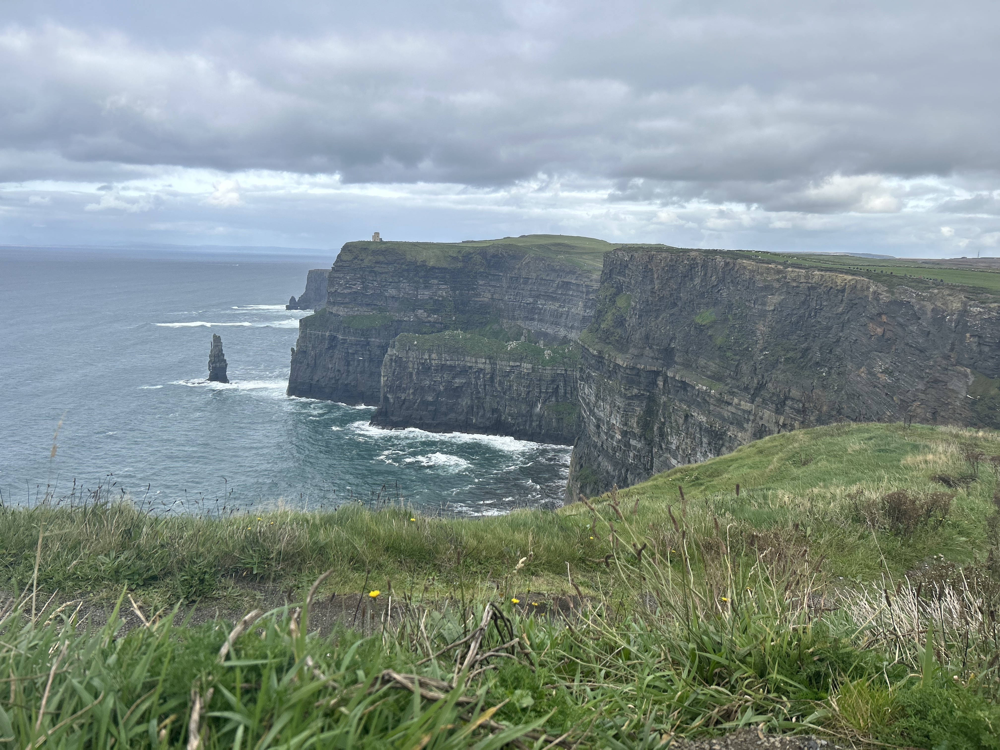
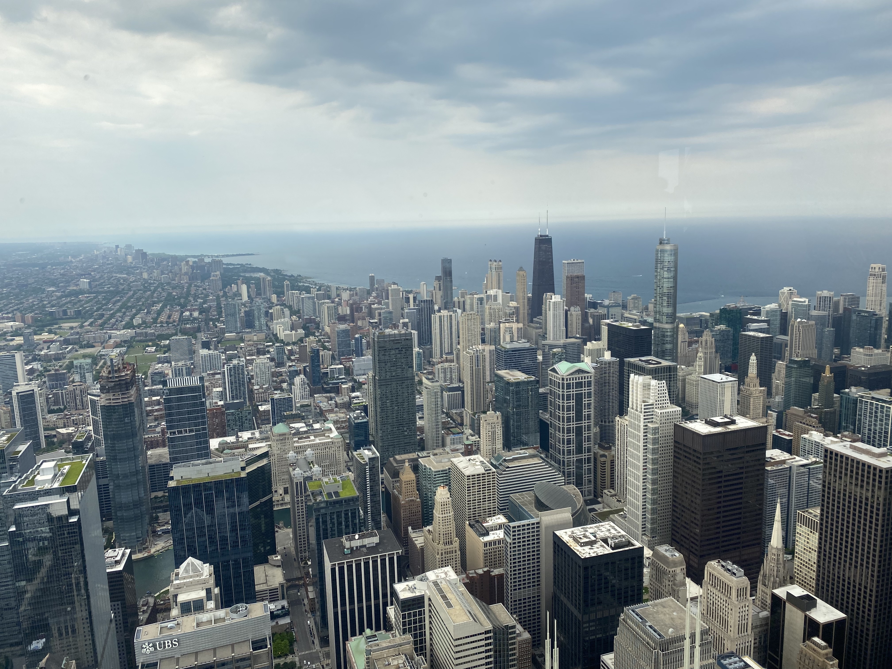
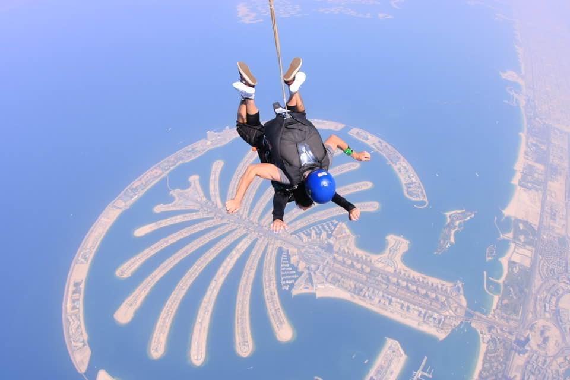
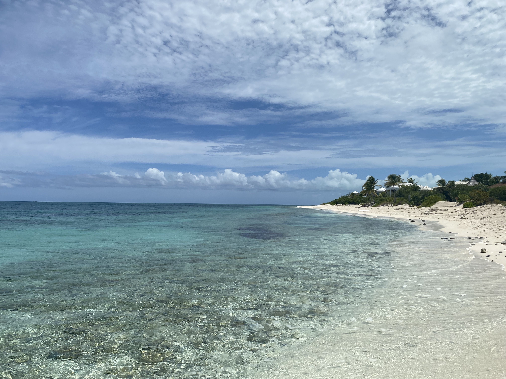

Cliffs of Moher ⚬ The Burren ⚬ Ireland ⚬ October 2022
In October of 2022 my friend Maria and I traveled to Ireland. We spent most of our time in Dublin exploring the city, visiting historic buildings and listening to awesome bands. We went kayaking on the Irish sea in wet suits (it was freezing) and saw a huge double rainbow. We used mostly the train for transportation and met some awesome people throughout the journey. We played blackball pool (their version of pool that uses only red and yellow balls) in a local pub. On Bow Street in Smithfield Ireland, we visited the Jasmeon distillery and tried differents types of freshly distilled Jameson. One evening we went on a haunted historic bus ride that took as all over the city and taught us the creepy history of Dublin. While traveling to the west coast of Ireland we toured the city of Galway. Went to the farmers market, bought handmade gifts for our families, and ate some amazing food. After that we headed to the Cliffs of Moher and hiked the border that peaks at 700 feet over the ocean. It was one of the most beautiful things I have ever seen.
Chicago

Skydeck ⚬ Willis Tower ⚬ Chicago ⚬ Illinois ⚬ June 2022
During the summer of 2022 my friend Jordan and I took the train from St. Louis, Missouri to Chicago, Illinois. I have a lot of family in Chicago that we visited. They live all over the city in neighborhoods like Logan Square, Lincoln Park, Wicker Park and Streeterville. We went to a Cubs vs Cardinals baseball game at Wrigley Field (Busch Stadium is better). Using the train for transportation we traveled the city making one of our stops the Willis Tower. There we went to the top floor and viewed the entire city from the Skydeck at 1,353 feet.
Dubai

Palm Jumeirah Island ⚬ Dubai ⚬ United Arab Emirates ⚬ October 2021
In October of 2021 my friend Kelly and I took the long flight to the United Arab Emirates to visit the beautiful city of Dubai. We spent most of our time exploring the city and viewing all of its amazing architecture. In downtown Dubai we visited the Burj Khalifa, the tallest building in the world. At the Palm Jumeirah Island I went to SkyDive Dubai and jumped out of an airplane at 13,00 feet. It was by far the scariest yet most thrilling things I have ever done. The next day we went to the desert to ride camels and four wheelers over the mounds.
San Francisco
Alamo Square Park ⚬ San Francisco ⚬ California ⚬ September 2020
In September of 2020 I flew to San Francisco, California to visit my friend Dustin for his 40th birthday. We traveled all over the city drinking, eating and enjoying the beautiful California weather. We went to a lot of huge San Francisco parks including Alamo Square Park where we hung out and enjoyed some very entertaining 'people-watching.' We saw the Painted Ladies, Victorian and Edwardian houses, the home where Mrs. Doubtfire was filmed during the outdoor scenes, and Alcatraz.
Turks and Caicos Islands

Turks and Caicos Islands ⚬ Providenciales ⚬ August 2022
In August of 2022 I flew to Turks and Caicos Islands and met my best friend Kayrine who flew from Valdosta, Georgia. We spent most of our time on the most beautiful beach I have ever seen. The sand was white and the water was chrystal clear. One morning we went to the Coral Gardens on the other side of the island, to snorkel. Swimming far out from the shore hoping to spot at least one sea turtle, we saw three! They were absolutely beautiful and longer than I am tall.
Jamaica
Orange Bay ⚬ Negril ⚬ Jamaica ⚬ May 2022
In May of 2021 my brother, cousin and cousins friends visited Negril, Jamaica. We stayed at an Airbnb right off the ocean in the heart of Negril. We walked all over the neighborhood stopping at local bars and restaurants for Jamaican food and drinks. We made friends with a lot of the locals and went to a ton of beach venues to listen to reggae bands. We took an all day boat ride up to coast of Jamaica stopping to jump in the beautful, clear water.